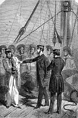

Nini Pheradze
14
Georgia, Zestafoni

GOAstudent
studingprogramming
My favourite sport-Swimming
Swimming is an individual or team racing sport that requires the use of one's entire body to move through water. The sport takes place in pools or open water (e.g., in a sea or lake). Competitive swimming is one of the most popular Olympic sports, with varied distance events in butterfly, backstroke, breaststroke, freestyle, and individual medley. In addition to these individual events, four swimmers can take part in either a freestyle or medley relay. A medley relay consists of four swimmers who will each swim a different stroke, ordered as backstroke, breaststroke, butterfly and freestyle.

Swimming each stroke requires a set of specific techniques; in competition, there are distinct regulations concerning the acceptable form for each individual stroke. There are also regulations on what types of swimsuits, caps, jewelry and injury tape that are allowed at competitions. Although it is possible for competitive swimmers to incur several injuries from the sport, such as tendinitis in the shoulders or knees, there are also multiple health benefits.
Evidence of recreational swimming in prehistoric times has been found, with the earliest evidence dating to Stone Age paintings from around 10,000 years ago. Written references date from 2000 BC, with some of the earliest references to swimming including the Iliad, the Odyssey, the Bible, Beowulf, the Quran and others. In 1538, Nikolaus Wynmann, a Swiss-German professor of languages, wrote the earliest known complete book about swimming, Colymbetes, sive de arte natandi dialogus et festivus et iucundus lectu (The Swimmer, or A Dialogue on the Art of Swimming and Joyful and Pleasant to Read).
Swimming emerged as a competitive recreational activity in the 1830s in England. In 1828, the first indoor swimming pool, St George's Baths was opened to the public. By 1837, the National Swimming Society was holding regular swimming competitions in six artificial swimming pools, built around London. The recreational activity grew in popularity and by 1880, when the first national governing body, the Amateur Swimming Association was formed, there were already over 300 regional clubs in operation across the country.
In 1844 two Native American participants at a swimming competition in London introduced the front crawl to a European audience. Sir John Arthur Trudgen picked up the hand-over stroke from some South American natives and successfully debuted the new stroke in 1873, winning a local competition in England. His stroke is still regarded as the most powerful to use today.
Captain Matthew Webb was the first man to swim the English Channel (between England and France), in 1875. Using the breaststroke technique, he swam the channel 21.26 miles (34.21 km) in 21 hours and 45 minutes. His feat was not replicated or surpassed for the next 36 years, until T.W. Burgess made the crossing in 1911.
Other European countries also established swimming federations; Germany in 1882, France in 1890 and Hungary in 1896. The first European amateur swimming competitions were in 1889 in Vienna. The world's first women's swimming championship was held in Scotland in 1892.
In Search of the Castaways (French: Les Enfants du capitaine Grant, lit''The Children of Captain Grant') is a novel by the French writer Jules Verne, published in 1867-68. The original edition, published by Hetzel, contains illustrations by Édouard Riou. In 1876, it was republished by George Routledge & Sons as a three volume set titled A Voyage Round The World.
The three volumes were subtitled South America, Australia, and New Zealand. As often with Verne, English translations have appeared under different names; another edition has the overall title Captain Grant's Children and has two volumes subtitled The Mysterious Document and Among the Cannibals.
Captain Grant's Children (also known as In Serach of the Castways) is a 600 page novel, that takes the reader from the Argentine Pampas, to South Africa, the Indian Ocean, Australia, New Zealand, and along the 37th Parallel, when a Scottish nobleman, Lord Glenarvan searches for a fellow Scotchman, Captain Harry Grant
The book tells the story of the quest for Captain Grant of the Britannia. After finding a bottle the captain had cast into the ocean after the Britannia is shipwrecked, Lord and Lady Glenarvan of Scotland contact Mary and Robert, the young daughter and son of Captain Grant, through an announcement in a newspaper. The government refuses to launch a rescue expedition, but Lord and Lady Glenarvan, moved by the children's condition, decide to do it by themselves. The main difficulty is that the coordinates of the wreckage are mostly erased, and only the latitude (37 degrees) is known; thus, the expedition would have to circumnavigate the 37th parallel south.
The bottle was retrieved from a shark's stomach, so it is impossible to trace its origin by the currents. Remaining clues consist of a few words in three languages. They are re-interpreted several times throughout the novel to make various destinations seem likely like Chile, Argentina, Southern Tip of Australia, at some times New Zealand and even the northernmost part of Antarctica (to which they never sailed).
The main difficulty is that the coordinates of the wreckage are mostly erased, and only the latitude (37 degrees) is known; thus, the expedition would have to circumnavigate the 37th parallel south. The bottle was retrieved from a shark's stomach, so it is impossible to trace its origin by the currents. Remaining clues consist of a few words in three languages. They are re-interpreted several times throughout the novel to make various destinations seem likely like Chile, Argentina, Southern Tip of Australia, at some times New Zealand and even the northernmost part of Antarctica (to which they never sailed).
Lord Glenarvan makes it his quest to find Grant; together with his wife, Grant's children and the crew of his yacht, the Duncan, they set off for South America. An unexpected passenger in the form of French geographer Jacques Paganel (he missed his steamer to India by accidentally boarding the Duncan) joins the search. They explore Patagonia, Tristan da Cunha Island, Amsterdam Island, and Australia (a pretext to describe the flora, fauna, and geography of numerous places to the audience).
There, they find a former quartermaster of the Britannia, Ayrton, who proposes to lead them to the site of the wreckage. However, Ayrton is a traitor, who was not present during the loss of the Britannia, but was abandoned in Australia after a failed attempt to seize control of the ship to practice piracy. He tries to take control of the Duncan, but by sheer luck, this attempt also fails. However the Glenarvans, the Grant children, Paganel and some sailors are left in Australia, and mistakenly believing that the Duncan is lost, they sail to Auckland, New Zealand, from where they want to come back to Europe. When their ship is wrecked south of Auckland on the New Zealand coast, they are captured by a Māori tribe, but luckily manage to escape and board a ship that they discover, to their astonishment, to be the Duncan.
However the Glenarvans, the Grant children, Paganel and some sailors are left in Australia, and mistakenly believing that the Duncan is lost, they sail to Auckland, New Zealand, from where they want to come back to Europe. When their ship is wrecked south of Auckland on the New Zealand coast, they are captured by a Māori tribe, but luckily manage to escape and board a ship that they discover, to their astonishment, to be the Duncan.
Ayrton, made a prisoner, offers to trade his knowledge of Captain Grant in exchange for being abandoned on a desert island instead of being surrendered to the British authorities. The Duncan sets sail for Tabor Island, which, by sheer luck, turns out to be Captain Grant's shelter. They leave Ayrton in his place to live among the beasts and regain his humanity.
